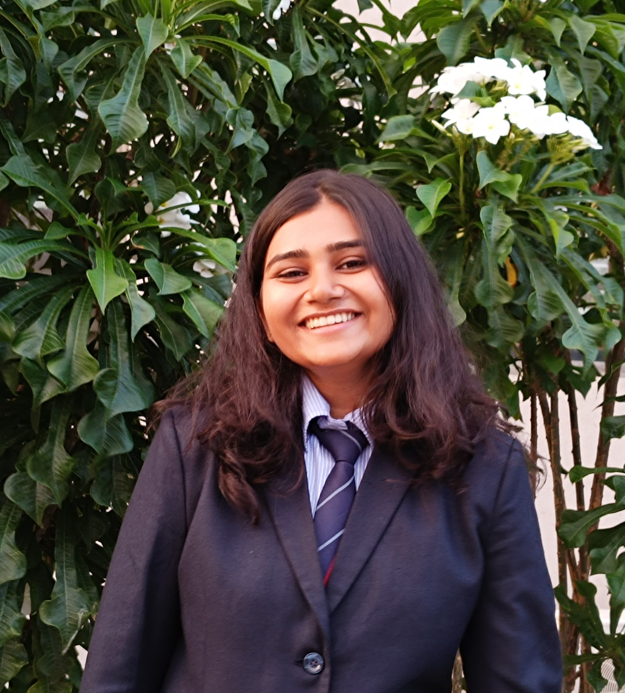

Praniti Parmar

Summary
Iam a Aspiring Software Developer
I am eager to contribute substantial value to the rapidly evolving digital landscape through my enthusiasm for development and research. As an individual fascinated by development roles, I aspire to thrive and grow in a dynamic and innovative environment
Education
-
Bachelor's in Engineering | (CGPA - 9.34)
Aug 2019 - Jul 2023
Dr.D.Y.Patil Institute Of Technology | Electronics and Telecommunication
Honors in Data Science
-
HSC | (CGPA - 9.46)
May 2017 - Jun 2019
Narayana Junior College | Science
Additional Subjects: English, Sanskrit
-
SSC | (CGPA - 9.60)
Aug 2007 - May 2017
Sri Sathya Sai Vidya Vihar | CBSE
Balvikas Student for 13 years
Work Experience
-
Open Source Contributor | Certificates
GirlScript Summer Of Code
Mar 2022 - May 2022
- Developed ”Awesome Chrome Extensions” website which consolidated numerous Chrome Extensions, enabling easy
downloads and previews, showcasing GSSoC contributor’s work effectively.
- Created ”Search GitHub Profile” webpage, enhancing user experience and accessibility without needing to open GitHub.
- Contributed to 5+ projects under GSSoC, making impactful changes to repositories.
- Tech Stack: HTML, CSS, BootStrap, JavaScript, React.js and GitHub Pages
- Ranked 57 among top 900 contributors.
-
Web Developer Intern | Certificates
Suvidha Foundation
Feb 2022 - Mar 2022
- Designed and developed a dynamic fully functional web application ”Analytica” for an educational institution, Streamline research paper analysis, storage, and management.
- Offering department-wise, yearly, and domain-based insights. Integrated automated sheet uploads and manual data entry for user convenience.
- Tech Stack: PHP, MYSQL, CSS, HTML, 000WebHost
- Recognized as one of the top-performing interns during the tenure.
-
Software Development Trainee
Zensar Technologies
Aug 2021 - Dec 2021
- Extensive training in Core Java and Advanced Java, specializing in OOP, JSP, and Servlets. Applied skills to develop a Dynamic payment website with MVC architecture, utilizing HTML, CSS, JSP, Servlets, XML TomCat Server, and MySQL Database.
- Acquired strong foundational knowledge, including Java networking, protocols, Servlet Lifecycle, Collections Framework, JDBC architecture, SDLC, MVC design patterns, MySQL & Python libraries.
Projects
Virtual Assistant Driven Predictive Model For Mental Well-Being | Link
- Developed a desktop app with authentication, registration, and a tailored questionnaire with 10 thoughtfully
designed yes/no questions, deploying a predictive model achieving 85% accuracy in evaluating mental well-being, enabling
targeted early intervention by providing personalized resources.
- Secured sponsorship from Lotus Multispeciality Hospital for the final year project.
- Conference Paper was presented and accepted for publication at the 14th International Conference-CNC23 by GRENZE.
- Tech Stack: Python, MYSQL, SVM, Machine Learning, Spyder IDE.
Smart Street Light Control System | Link
- Developed an automated Smart Street Light system focused on energy-efficient illumination by dynamically adjusting light intensity based on vehicle movement using IR sensors and real-time object detection.
- Tech-Stack Used: Python, IOT, Arduino, Proteus, Infrared Sensor Simulation.
Achievements
Program Manager | GirlScript Summer Of Code 23
Apr 2023 - Aug 2023
- Managing program of 17K+ contributors, 200+ mentors, 90+ projects and 20 + Core Team Members.
- Demonstrated strong leadership skills, took up more than 100+ hrs of sessions under the program.
Open Source Mentor | GirlScript Summer Of Code 22
Mar 2022 - May 2022
- Mentored 100+ contributors of the repository Awesome Chrome Extentions
- Reviewed and merged contributor’s pull requests, helped them get started with GitHub
- Was recognized as one of the top mentors by GirlScript Team
Technical Skills
- Languages: Java, Python, SQL (MYSQL), HTML, CSS, C/C++, Latex
- Frameworks: Java Collections, ReactJs NodeJs, WordPress, BootStrap, Wix
- Developer Tools: Git, GCP, Visual Studio, Eclipse, PowerBI
- Course Work: OOPS, DBMS, CN, OS